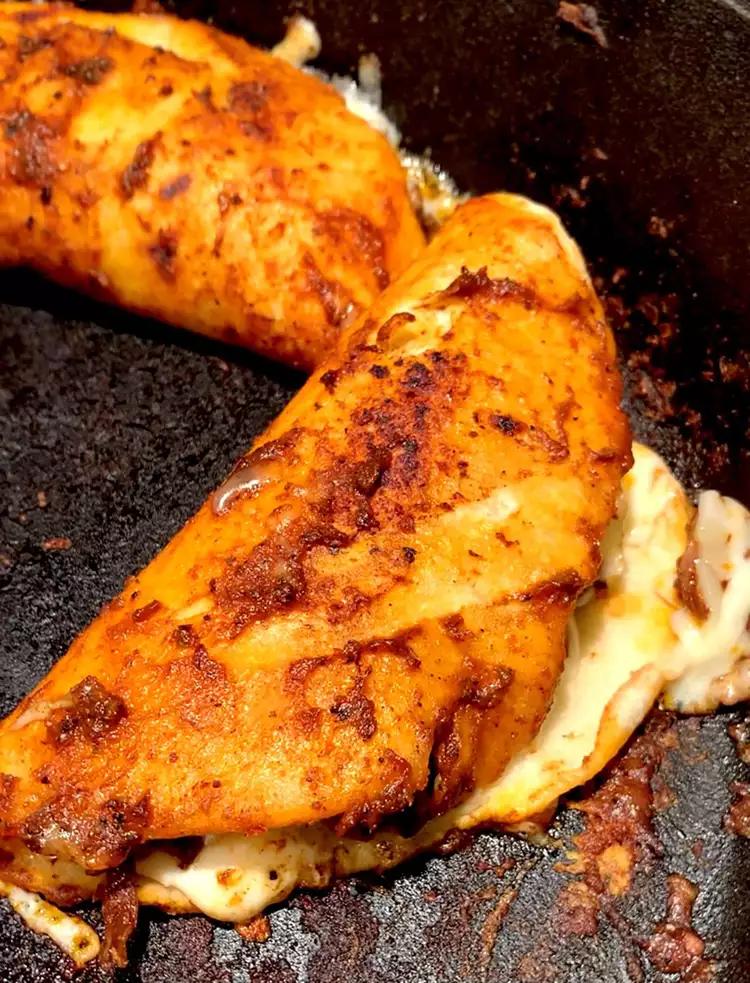

Quesabirria Tacos

Description
Quesabirria tacos are a delicious and cheesy taco that originated in Tijuana, Mexico. They are made with beef,
cheese, and corn tortillas.
Ingredients
- 1 lb beef
- 1 cup cheese
- 10 corn tortillas
Instructions
- Cook the beef
- Add cheese to the beef
- Place beef and cheese mixture in tortillas
- Cook the tacos
Enjoy!
Home